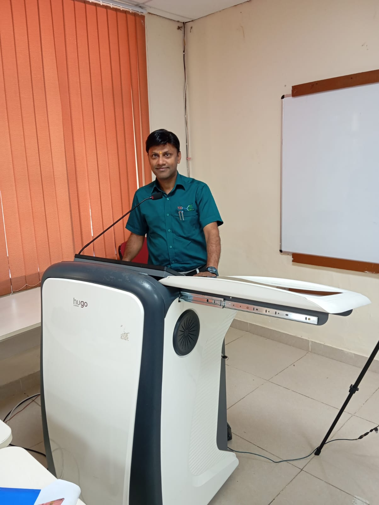
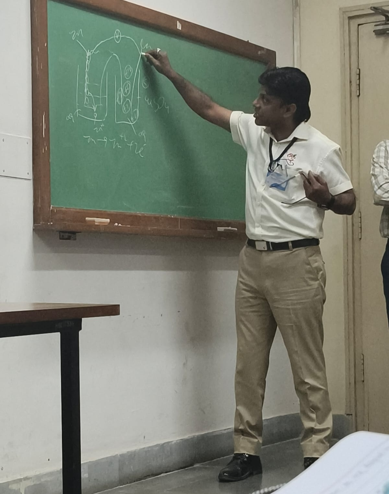
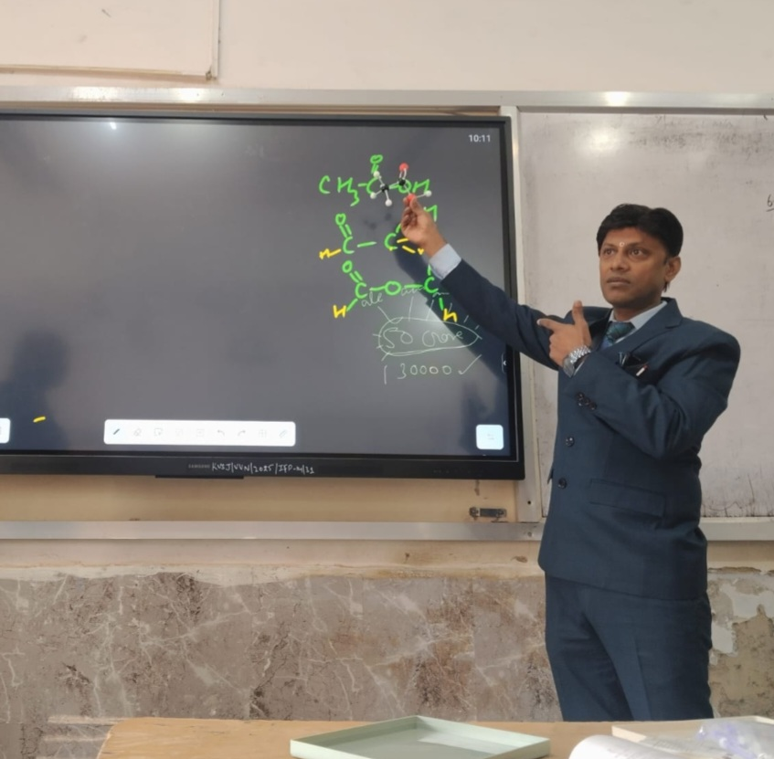

About Us

An initiative by Sheshank Prajapati, a certified counselor from the National Council of Educational Research and Training (NCERT) with 25 years of experience in the field of teaching, Karma and Concepts aims to transform the way students experience education. In today’s system, learning often focuses heavily on rote memorization, placing pressure on students to remember information rather than truly understand it. This approach not only creates stress but also limits the development of real skills. At Karma and Concepts, our mission is to promote a modern, practical, and skill-based learning approach that encourages understanding, critical thinking, and real-world application. We aim to help students move beyond zero-skill learning and develop meaningful abilities that prepare them for life beyond examinations.
At Karma and Concepts, our mission is to promote a modern, practical, and skill-based learning approach that encourages understanding, critical thinking, and real-world application. We aim to help students move beyond zero-skill learning and develop meaningful abilities that prepare them for life beyond examinations.
हमारे बारे में

Sheshank Prajapati द्वारा शुरू की गई एक पहल—जो कि नेशनल काउंसिल ऑफ एजुकेशनल रिसर्च एंड ट्रेनिंग (NCERT) से प्रमाणित काउंसलर हैं और शिक्षण के क्षेत्र में 25 वर्षों का अनुभव रखते हैं—Karma and Concepts का उद्देश्य छात्रों के शिक्षा के अनुभव को बदलना है। आज की शिक्षा प्रणाली में सीखने का केंद्र अक्सर रटकर याद करने (rote memorization) पर अधिक होता है, जिससे छात्रों पर जानकारी को केवल याद रखने का दबाव पड़ता है, न कि उसे वास्तव में समझने का। यह तरीका न केवल छात्रों में तनाव पैदा करता है, बल्कि वास्तविक कौशलों के विकास को भी सीमित कर देता है। Karma and Concepts में हमारा लक्ष्य एक आधुनिक, व्यावहारिक और कौशल-आधारित शिक्षा पद्धति को बढ़ावा देना है, जो समझ, आलोचनात्मक सोच (critical thinking) और वास्तविक जीवन में उपयोग को प्रोत्साहित करे। हम चाहते हैं कि छात्र केवल शून्य-कौशल वाली पढ़ाई से आगे बढ़ें और ऐसे सार्थक कौशल विकसित करें जो उन्हें परीक्षाओं से आगे के जीवनके लिए तैयार करें।Our Vision

Our vision is to empower students to become capable individuals and valuable assets for the nation, who will use their skills, knowledge, and creativity to contribute towards building a stronger and more progressive India.हमारा उद्देश्य
हमारा उद्देश्य छात्रों को सक्षम और योग्य व्यक्तियों के रूप में विकसित करना है, ताकि वे राष्ट्र के लिए एक मूल्यवान संपत्ति बन सकें। वे अपने कौशल, ज्ञान और रचनात्मकता का उपयोग करते हुए एक अधिक मजबूत और प्रगतिशील भारत के निर्माण में योगदान दे सकेंगे।
Why Karma and Concepts?
Karma and Concepts is built on the belief that education should go beyond rote memorization and focus on true understanding. Our platform aims to transform the way students experience learning. Here students can experience easy learning with indepth concept building without any difficulty and misunderstandings. Our goal is to encourage a modern, practical, and skill-based learning style where students build conceptual clarity, critical thinking, and the ability to apply knowledge in real-life situations. The resources available on this platform are designed to support effective revision, reduce academic stress, and make quality study material accessible and affordable for students. Through this initiative, we aim to guide learners towards becoming capable individuals who not only succeed academically but also develop the skills and confidence needed to contribute positively to society and to the progress of the nation.
क्यों चुनें कर्मा एंड कॉन्सेप्ट्स को
हमारा उद्देश्य एक ऐसी आधुनिक, व्यावहारिक और कौशल-आधारित शिक्षण प्रणाली को प्रोत्साहित करना है, जिसमें विद्यार्थी केवल रटने तक सीमित न रहकर विषयों की गहरी समझ (Conceptual Clarity), तार्किक सोच (Critical Thinking) और अपने ज्ञान को वास्तविक जीवन की परिस्थितियों में लागू करने की क्षमता विकसित कर सकें। इस मंच पर उपलब्ध अध्ययन सामग्री को विशेष रूप से इस प्रकार तैयार किया गया है कि वह प्रभावी पुनरावृत्ति (Revision) में सहायक हो, विद्यार्थियों पर अनावश्यक शैक्षणिक तनाव को कम करे और गुणवत्तापूर्ण अध्ययन सामग्री सभी विद्यार्थियों के लिए सरल, सुलभ तथा किफायती रूप में उपलब्ध हो सके। इस पहल के माध्यम से हमारा उद्देश्य विद्यार्थियों को ऐसे सक्षम और आत्मविश्वासी व्यक्तियों के रूप में विकसित करने में मार्गदर्शन देना है, जो न केवल अपनी शैक्षणिक यात्रा में सफलता प्राप्त करें, बल्कि अपने ज्ञान, कौशल और रचनात्मकता के माध्यम से समाज के लिए सकारात्मक योगदान दें तथा एक सशक्त और प्रगतिशील भारत के निर्माण में महत्वपूर्ण भूमिका निभाएँ।